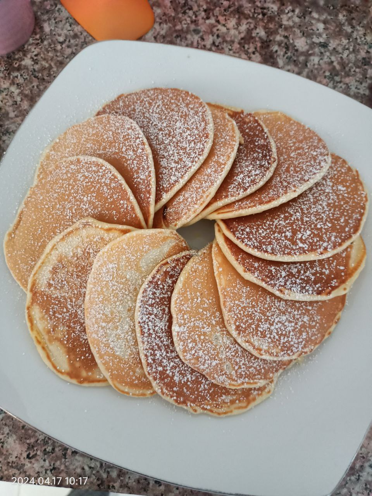

Pancake Recipe
Start your day with these quick and easy homemade pancakes, perfect for a cozy breakfast or brunch.This recipe serves 2 people and takes only about 15 minutes to prepare and cook.The pancakes are soft, fluffy, and perfect for topping with syrup, fresh fruit, or your favorite spreads!

Ingredients
| Ingredients |
Amount |
| Eggs |
1 |
| Milk |
1 cup |
| Baking powder |
1 tsp |
| Vanilla extract |
Half tsp |
| Butter |
2 tbsp |
| Sugar |
Half cup |
| Salt |
One pinch |
| Flour |
عينك ميزانك |
| Syrup/Toppings |
According to taste |
Recipe
-
Prepare the wet ingredients:
In a large mixing bowl, whisk together 1 egg, 1 cup of milk, and ½ teaspoon of vanilla extract until well combined.
-
Mix the dry ingredients:
In a separate bowl, combine 1 teaspoon of baking powder, ½ cup of sugar, a pinch of salt, and enough flour (عينك ميزانك) to create a smooth, slightly thick batter consistency
-
Combine wet and dry ingredients
Gradually add the dry ingredients to the wet mixture, stirring continuously to avoid lumps.
-
Melt the butter:
Melt 2 tablespoons of butter and add it to the batter. Mix until the butter is evenly incorporated.
-
Heat the pan:
Heat a non-stick frying pan or skillet over medium heat and lightly grease it with a small amount of butter.
-
Cook the pancakes:
Pour about 2-3 tablespoons of batter onto the pan for each pancake. Cook until bubbles form on the surface and the edges look set, about 1-2 minutes.
-
Flip the pancakes:
Carefully flip each pancake and cook for another 1-2 minutes, or until golden brown on both sides.
-
Serve and enjoy:
tack the pancakes on a plate and serve warm with your favorite syrup or toppings, such as fresh fruits, whipped cream, or honey.